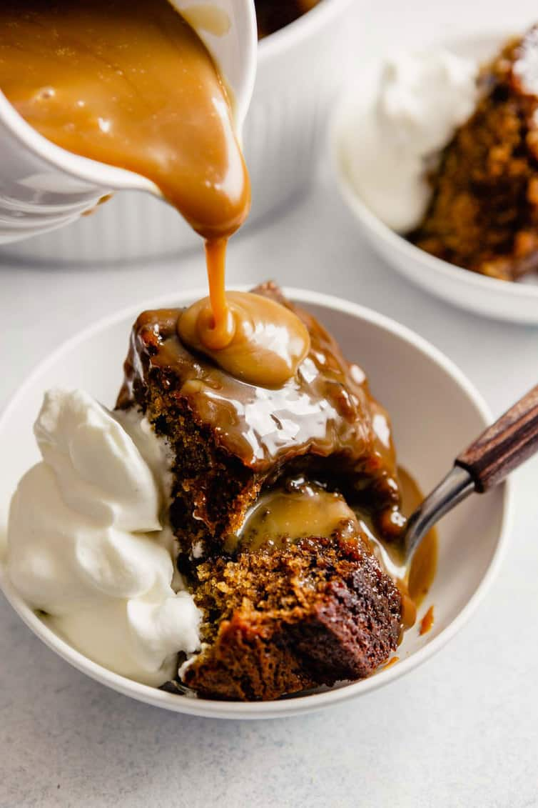

Sticky toffee pudding recipe

Description
These luscious sticky toffee puddings are all about the honeyed sweetness of plump dates and buttery caramel.
Ingredients
- 2 1/2 cups heavy cream, divided
- 1 stick unsalted butter (4 ounces)
- 1/2 cup light corn syrup
- 1 cup granulated sugar
- 6 ounces pitted dates (about 7 dates), preferably Medjool
- 3/4 cup water
- 3/4 cup plus 2 tablespoons all-purpose flour
- 1 teaspoon baking powder
- 1/4 teaspoon baking soda
- 1 pinch of kosher salt
- itd.
Steps
- Korak 1
- Korak 2
- Korak 3
- Korak 4
- Korak n